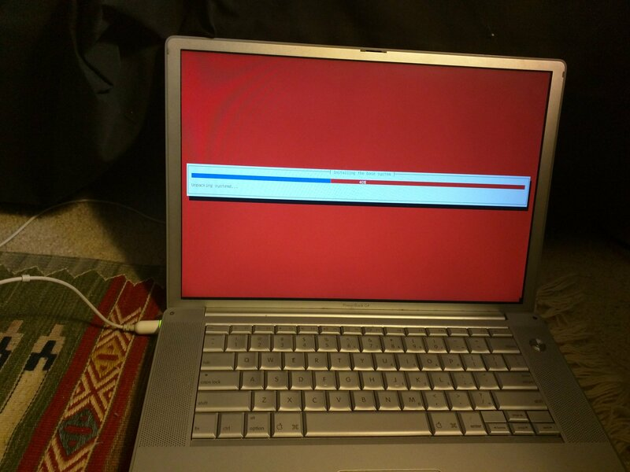
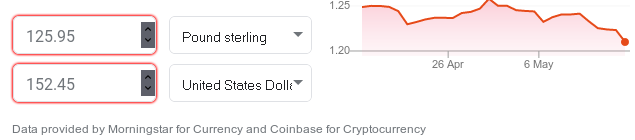
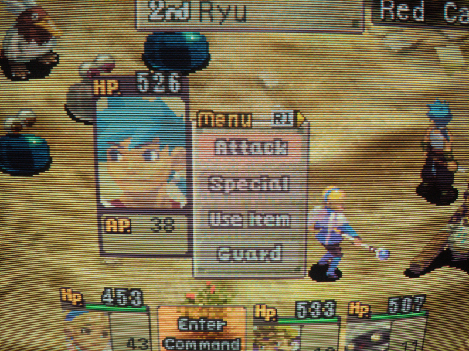

The Powerbook G4 Story
Or:
Squeezing Every Last Drop of Life out of Abandoned Hardware
Platforms
28 Apr 2021
A while ago now (November 2017, at latest), I got a 1.33GHz
aluminum PowerBook G4 (model A1095) from a HAM radio convention. I
pretty much instantly regretted my impulsive buy (since I saw something
else that I also wanted and didn't have the cash on-hand anymore), but
no refunds. So I brought it home.
The following is a partial story of my journey with this machine.
I've since discovered what it can do, as well as its limitations, and
I'm not quite so regretful of my purchase anymore. This laptop has
yielded some great learning experiences for me with respect to
hardware and software, and also made me more mindful of good software
design principles.
Note also that much of the stuff I am writing about was done a year or
more ago, and is therefore likely to have accidental omissions, and
possibly actual inaccuracies as well. I just think it's been a kind of
fun project to get this thing and that maybe other people could benefit
or possibly even be entertained by the story.
First Impressions/Hardware Summary:
I have a dislike for most Apple hardware, and am still ambivalent
about this 'book (having had to open it up), but I am convinced that
at the very least the Apple of ~2004 was a different company than
it is now. There are several examples of this, but most prevalent are:
Standard computer I/O ports:
3x USB 2.0 ports
1x full-size gigabit ethernet port
1x TV-Out connector (7-pin Mini-DIN or variant, also found on
other computers of the period)
2x IEEE 1394 "firewire" ports (FW400 and FW800)
1x modem connector
2x 3.5mm TRS jacks, for audio output and a microphone
1x dual-link DVI-I connector
1x cardbus expansion slot(!)
A fantastic feeling keyboard (though there are still some
issues):
Missing navigational keys, insert key, print screen key (not
a huge issue in OS X, but convenient in other OSes)
the F* keys are not spaced out into quads, so blindly reaching
for them isn't as easy as it is on a classic Thinkpad
No way to distinguish between left and right 'command' keys.
They both send the same keycode. I think this might be a legacy of
the Apple Desktop Bus (ADB) which they use, since my Apple Extended
Keyboard (1987) also does this.
Note that the dual-link DVI connector is superior to Apple's later
proprietary Mini-DVI in that it supplies far higher video resolutions.
Apple took a step back and downgraded to 1920x1200 @ 60hz maximum when
they moved to mini-DVI. The only dongle I can imagine needing on this
machine would be a passive DVI-I to VGA adapter, if connecting the
laptop to a CRT or similar. These are widely available and not
Apple-exclusive; I have at least three. Apple sure doesn't build them
like they used to.
Some other specs of this machine include a 1280x854 TFT LCD (of pretty
good quality and a nice aspect ratio), a Motorola/Freescale PowerPC
7447a CPU (7450 derivative) with the Altivec SIMD instruction set,
an ATI Mobility Radeon 9700 GPU (connected via AGP; there's a hardware
bug with this that I'll try to get to later in the post), and initially
(I believe) 512MB of DDR SDRAM. One of the first things I did was
upgrading it to 2GB of RAM (its maximum amount).
I also replaced the battery pack with an aftermarket one almost
immediately, since the original Apple one was toast and my charger plug
is slightly bent/messed up. If the plug comes out or twists too much,
the machine will lose power, and since the battery was totally
ineffective that meant instantly and abruptly turning off. My
particular aftermarket battery didn't quite sit flush with the bottom
of the laptop's chassis, so I put a strip of silver duct tape around
the edge of it to stop the thin aluminum plate on the bottom from
scraping against surfaces.
Probably the single most major issue with the Powerbook (especially
if not running OS X on it) is its single-button touchpad. This can be
worked around; I'll try to remember to mention it when I get to writing
about running Debian Linux on it.
There's also an intermittent problem I've had with the real-time clock
(and PRAM) battery, which makes me think it probably needs replacing;
I'll get to that eventually, but it's not a very big deal since I can
synchronize its clock with my other machines pretty easily. It uses a
rechargeable Panasonic CGL3032 Li-ion coin cell soldered to a
small daughterboard with tabs.
Since the original board assembly (part # 820-1686 or 820-1686-A) is
apparently hard to find and often unavailable on ebay, etc., and the
Panasonic coin cell in question is no longer in production, I'll
probably end up ordering a similar cell I found on Digikey. Since
that battery doesn't have solder tabs and I don't have equipment
to weld them (risky), I'll either have to try taping it down, finding a
battery clip that fits in the gap in the board, or throwing caution
to the wind, sanding down the coin cell's sides (to create a rough
texture), and soldering the tabs from the old battery onto it.
I've done that before with alkaline cells, although I don't like doing
it at all, and I'm always afraid I'll injure myself some day doing it.
I'm not sure I want to risk it with an Li-ion cell, so for now I've
just resigned myself to keeping the existing battery in here until
I stop being able to ignore it.
Software: Getting Rolling
At the time I bought the machine, I think it was running
OS X 10.4 (Tiger) or 10.5 (Leopard), but I only booted it into OS X
once or twice on it before diving deeper. To me, at least, there's
almost zero reason to run such an outdate OS X version on these
macs, since the Apple ecosystem makes finding software that is still
compatible with it difficult at best, and even building source code
for it sounds painful due to the age of the official Apple toolchain.
Thus, I quickly decided to put Debian on it. I chose Debian primarily
because it's my distro of choice on my x86 desktop and laptop, but
also because it actually had
an official, current 32-bit PowerPC release (Jessie) at the time
that I installed it. This is no longer the case (it's not what they
dub a "release architecture" due to some problems), but it's still
a part of the Debian "Ports" project, so a Sid-equivalent distro
installer can be found here,
along with several other less-popular architectures, and a Debian 10
CD image was also apparently created for PowerPC (in an unofficial
capacity) here.
Anyway, I burned a Debian installer CD-R, after unsuccessfully
attempting to get it to boot off a USB. Apparently, it can be done, but I
was quick to lose patience with Open Firmware and went for the install
medium which I was more certain could actually work.

Debian installer, running for the first time on the Powerbook.
I removed Systemd after the installation, but that was just a matter
of personal preference.
After the installation (successful, btw), I copied over the firmware
files for the Broadcom wireless chipset (for the Linux b43 driver).
The chip in my machine is a BCM4306, and the airport card is a
non-standard pinout so I can't just put a better card (such as
one with an atheros chip that uses the ath9k driver) in, unfortunately.
This is something I could use the Cardbus slot for in the future, though.
I've done this what feels like a dozen times or more on
Intel machines, and it worked exactly the same here, so if you try this
and have difficulties please note that you can just look at instructions
from x86 users with older wireless chipsets. I happen to know
that the process is quite similar on Dell Latitude D610 laptops, for
instance, and I think the D630's as well. Many, many devices used
Broadcom's BCM43xx chips for wireless LAN in the mid-to-late 2000's,
so there's plenty of information out there.
I think the next thing I did (after installing an X server, since I
had done a minimal offline install initially) was to make the touchpad
less annoying (disable 'tap-to-click') and to make the "F*" keys send
the "F*" keycodes instead of their "brightness/volume adjustment/etc."
ones when pressed without holding the 'Fn' key. I found a package called
'pmac-utils'
which contained the tools I was looking for. After it was installed, I
added the following to the end of my '/etc/rc.local' file:
if [ -e /sbin/trackpad ]; then
/sbin/trackpad notap || /bin/true
fi
if [ -e /sbin/fnset ]; then
/sbin/fnset -u || /bin/true
fi
Note that if you are using systemd as your init system, you can't run
stuff at boot from 'rc.local' like I did. You'll have to find your
own way to run stuff at boot; I'm using 'sysvinit' (System V Init)
for my init system. A quick search suggests that
this might not be too hard to do, but I have not tried it myself.
I also installed a program called
'mouseemu,'
which basically can intercept keystrokes and mouse/touchpad inputs,
listening for keyboard modifiers when clicking to simulate pressing other
mouse buttons. I decided to configure it so that holding a 'command' key
while clicking would send a right click keystroke.
This program has a side-effect of preventing buttons beyond the standard
left click, right click, and middle click/scroll from working when using
an external USB mouse, so I also made
a modified version of it
that can pass through two additional mouse buttons (BTN_SIDE and BTN_EXTRA).
These are the other buttons on a Microsoft Trackball Optical and are used
in many mouses for navigating forward and backward in a web browser
(they are mouse button ID's 8 and 9 in X).
My patch is here,
by the way, in case you want to add even more buttons yourself.
Mouseemu is configured on my system via /etc/default/mouseemu, which is
sourced by init scripts in /etc/init.d/. I am pretty sure that the
configuration is sourced the same way on a Systemd-as-init machine. To
find the keycodes you need to pass to it, either find the key ID's in
'include/linux/input.h' or run 'showkey' outside of X (in a TTY;
ctrl-alt-f1 for instance). Here's my personal configuration
(note: pretty sure 272 is the mouse button event):
RIGHT_CLICK="-right 125 272" # command + click
MID_CLICK="-middle 100 272" # fn+alt+click
SCROLL="-scroll 0" # disable scroll key for now pending investigation (no idea how it works...)
TYPING_BLOCK="-typing-block 0" # block mouse for 0ms after a keypress, or it interferes with playing Quake!
I have end-of-semester homework due really, really soon, now, so I'm
going to end this post here to slave away on it for a bit.
I'll try to come back to it and expand on it later, though! There's
tons more stuff that I've also done. Here's a sample
(a teaser, of sorts):
Fixing a hang when X starts on ATI GPU's
I actually meant to write about this today, but I forgot
Short, short version (to be expounded upon): boot with
'radeon.agpmode=-1' kernel argument
In Yaboot prompt, type 'Linux radeon.agpmode=-1' and hit enter
This can be made permanent, but I'll talk about that next time
There is a performance penalty, which I'll discuss
Fixing Firefox 52/Seamonkey 2.49 on PowerPC:
Official Debian package was really buggy/crash-prone
Performance went way up by comparison; crashes pretty much never
Re-introduces ALSA support (no pulseaudio requirement for sound anymore)
various post-installation tweaks to its configuration to improve
compatibility with modern websites
Newer versions of FF appear to be a showstopper, due to vast
architectural changes and general apathy on Mozilla's part, but I
will discuss possible solutions/workarounds.
Getting GIMP 2.10
Basically, a library Gimp 2.10 uses (gegl, I think) builds fine,
but one of the post-build tests times out due to poor performance on
PowerPC (and MIPS)
Due to this, Debian's build bots think the package failed to build
Since it depends on this library, GIMP 2.10 doesn't exist in the
Debian repositories for PowerPC
However, you can tweak the build configuration, rebuild it yourself,
and then (after a very slow/long build process) GIMP 2.10 actually
works fine. I'll detail how to do this
Porting software-rendered and GL Quake (Quake 1)
I prefer software-rendered quake over any of the "modern" engines;
after a lot of confusion I figured out how to get this version working
on PowerPC (avoiding x86-specific assembly code)
Coercing RGB from Retro Video Game Consoles on the Cheap
Or:
Modifying Game Consoles for Fun and Less Financial Damage
15 May 2020
One of my long-standing hobbies (and at times mild obsessions) is
getting everything I can out of old video game hardware. Back when I
started getting interested in old video games, lots of these systems
like the NES, Super NES, and so on were relatively affordable and
cheap.
Unfortunately, however, in the last ten years or so I've been noticing
prices rise. a NES game I got for $10 to $15 might be $25 or $30 now;
the best example I know of in my collection is Chrono Trigger, which
seems to like selling for $100 nowadays. The best example I
don't own that I would like to is Earthbound for SNES. I've
basically given up on finding that one; it's just proof (in my mind)
that people are sometimes crazy with the value they attribute to
things.
In the same way, accessories for consoles are staying pretty costly,
for the most part. And a "cottage industry" has developed around
providing new accessories for these old systems. For me, the most
interesting (and aggravating) of these is the manufacture of RGB video
cables.
Crazy Cables
There are few consoles that use a "standardized" connector for any
form of video signal of higher quality than RF. Notably, the original
western NES revisions can output composite video and monaural audio
using RCA jacks, which it seems manufacturers since stepped back from.
My only guess is that they discovered they could make more profit by
selling special cables with proprietary connectors separately from the
consoles themselves. Maybe this has gotten better with the advent of
HDMI, but as my newest game console is (still) a Nintendo Wii, I have
not bothered to check this. It seems to be the case, if vague memories
of discussions with others are anything to go by.
Anyway, back to the RGB video cable issue. In the 90's, essentially
nobody in North America had RGB-capable sets, and even those with
15.6KHz (TV-frequency) RGB monitors for computers (like the Amiga)
most likely didn't have cables for RGB from their consoles or even
know that the consoles exposed RGB video signals on their A/V
connectors. For most people, S-Video was good enough on the consoles
that would support it. For consoles like the Sega Genesis, which didn't
offer S-Video, though… Well, they just had to make do, I guess.
Now, after a decade of (initially affordable) RGB CRT monitors from
professional installations being readily available, the situation has
changed. Additionally, scalers and other devices for connecting
consoles to modern sets have appeared. The best quality video signal
that can be had from most consoles is RGB, so there is now some demand
for RGB video cables in North America. The cottage industry that's
sprung up seems to be a little on the crazy side, though. All the
prices below are the cheapest-priced options that could possibly work on
my monitor; they are not the "optimal" or "most compatible" options
that this particular business sells (it claims to be the number one
option for such cables– a claim which seems very substantiated by
the number of people I've talked to who have used them, at least).
…Let me just convert that to Freedom Units really fast.

…Uh, that's $152.45.
Before shipping from the UK to the US.
I never paid that much for any of my old consoles. In fact, that
might be around as much as I paid for all of the combined.
In 2005, I could have purchased a brand new Nintendo DS with that money.
I could buy a more-than-decent brand new graphics card today for that much.
Or maybe even purchase a textbook for a university course.
And who even knows how long it'd take the package to get overseas and
past customs! Also, if the cable ever breaks, I have to do it all
over again. It's pretty frustrating to stop in the middle of an RPG
(I mostly like JRPG's; I bought a Master System almost entirely for
Phantasy Star and Ys).
This is worsened by the fact that all sellers seem to be fixated on the
idea that I'm going to use SCART for connecting my systems, which is
silly as SCART switches are expensive, practically nothing in america
even uses SCART connectors (so they're hard to source), and
even in Europe they're rather obsolete in 2020. So to use their cables,
I additionally have to purchase a "SCART to BNC" cable to connect to
the back of my monitor.
I guess most people into this stuff are probably older than me, have
good paying jobs, and are further ahead in life than me as an
undergraduate studying at a university. Still, those prices are a
pretty huge barrier to entry for a near-minimum-wage worker in a state
where the minimum wage is still $7.25.
Even after I was lucky enough to get a nice RGB CRT or two by mostly
luck and chance (with maybe a pinch of initiative-taking. Possibly a
teensy bit of soliciting as well).
A More Economical Way
I have seven consoles that I play somewhat often. Of those, five
output RGB as their highest-quality option, one outputs component video
(the Wii), and one outputs composite video (my Famicom, which is modded
and can output composite like an american NES can).
I have four in the images above, since I already have something that I
got at the same time as my Amiga 500 which obviates my problems there
(a 23-pin-Amiga-RGB to VGA adapter; used with my Commodore 1942
monitor).
The Famicom and the Wii are the easiest to get top quality out of; I
modded the Famicom for composite video myself and was able to re-use
the existing holes in the back of the shell for composite video via
RCA and dual mono audio via a TRS jack. The Wii was super easy, because
I was able to get a new (third-party but decent quality) component
(YPbPr) multi-system cable meant for it, the XBox 360, and the PS3 on
clearance at a GameStop in around 2014 or 2015.
Most of my other consoles I drilled holes in to add RCA jacks to carry
Red, Green, and Blue signals, as well as a composite sync signal. In a
couple cases, I added S-Video jacks as well. However, on the original
PlayStation, this is harder to do since there's a thick metal RF
shielding plate which doubles as a support structure for the CD pickup
mechanism. This means I can't just remove it. It comes up really close
to the plastic on the back of the console. Additionally, for all the
times that I've done it, I don't actually like cutting holes in my
systems if I can easily avoid it. With the PSX, I have managed to
avoid doing so while staying economical.
Okay, now that all that build-up and context has been brought into the
light, I can get to the point of this post. These things always end up
way longer than I expect them to. Sorry. I start writing and just don't
stop sometimes (At least that carries over into documenting my code as
well).
The actual clever idea I had was involving the original Playstation;
it's essentially a way to avoid having to shell out the big bucks for
imported cables or cut holes in your precious systems. Depending on
your revision of PSX, there are two easy routes you can take if you
don't want to actually modify your system but want to get RGB out of
it.
PSX Revision Identification
There are actually a bunch of micro-revisions of the original
Playstation, but for this particular post's purposes we can
use a radically simplified shorthand version of it. We can do this
since only one of those differences really matters here, and it's a
rather blatantly obvious difference when examining a Playstation unit.
Probably the first one most average people would notice.
You tell me if you can spot it.
If your answer was, “The top one has seen better days,” well, you'd
be right. If I can ever work up the courage to show pictures of the
repair work I've done inside, you'll see that you're more right than
you could possibly have known. As it is, though, I'm slightly ashamed
of how it looks inside, even though I did what had to be done
for it to work properly again. It definitely required an inordinate
amount of time and effort to get it to 100% when compared to all of my
other consoles.
In any case, that's not actually the important distinction, just
another “story for another time.” Unless you are using a browser that
doesn't show pictures (like Lynx), you can probably also see the lack
of RCA jacks on the bottom one. That's the actual important difference
here for the purposes of this post.
The sharpie'd word "LUMA" written on the console with the jacks is
tangentially relevant, but since this post is already so long I'll
save it for another time. It's only marginally important as an
improvement to the basic idea I'm trying to communicate in an overly
verbose manner, but I basically just re-routed the S-Video luma line
to the yellow RCA jack for a slightly more stable sync signal than
the composite signal with color information would be able to provide.
You see, very early original PlayStation units came with RCA jacks
(and in Japan, even a standard S-Video connector at first). Later
units removed those. Unfortunately, this removal roughly coincided with
Sony's transition from a truly terrible CD drive design to a simply
mediocre one.
The mediocre one was definitely much better than the original,
since it had the upshot of not grinding itself out of alignment over
the span of a few years. This unfortunate tendency seems to have made
original units with jacks rather less common, though I suppose that
could also just be because they were most expensive at launch and had
less games available at first. So maybe they just didn't sell too many
by comparison to the wave that was to come.
Or maybe I've just had strange luck with what units show up in stores,
so my idea of the statistics are skewed.
Anyway, the unfortunate thing is that if your system has RCA jacks, and
it's not been serviced at some point, it probably has one of the really
unreliable drives inside and probably already struggles reading discs.
Unlike the later units, where simply oiling the spindle motor is
usually all they need to work perfectly, the early units basically just
need to be replaced if you want them to be dependable. I did so with
mine, but it requires having a drive to swap in, and usually pulling
from another newer, working console.
You can also try rolling the dice on one of the newly manufactured
clone drives that you can get from places like ebay and AliExpress;
I've had some of those that worked perfectly and silently, and some
that would cut nice rings into my CD's with their lenses. If you buy
them, I suggest buying and burning cheap CD-R's with music (or games,
if you have a modchip) to test the drives out before trusting them
with your authentic discs.
So either your system has the RCA jacks built in and is unreliable
for a lack of spare parts, or you have to buy one more thing to derive
RGB from newer ones (still more affordably than those cables above).
I'll explain both of these solutions now.
On Systems With RCA Jacks
If you have the revision with the RCA jacks, and your CD drive is
miraculously working (be it due to repairs, incredible luck, or some
other form of high wizardry), then all you need to get RGB out of your
playstation is a PS3 component video cable and an additional straight
single RCA ↔ RCA cable.
If you want to get rid of the DC coupling on the video signals, however,
you will need to do more work internally that I'm not covering in this
post because I've been typing this for over two hours now. I've done
it, but it is not strictly necessary and not doing so is nowhere near
as bad as not removing the DC coupling from audio signals (speakers are
sensitive to it, but TV's really aren't).
With that caveat in mind, all you have to do for basic RGB output is
to run a wire from the yellow RCA jack to your sync input. Most
screens will accept this as sync. Then the component cable's Y line
goes to Green, Pb goes to Blue, and Pr goes to Red. Use three
RCA-to-BNC adapters on the back of your screen, if yours uses
them.
On Systems Without RCA Jacks
You'll need to find a “guncon” (light gun) adapter; I recommend the
Sony SCPH-1160, since it's an official product and it has a fully
populated AV connector that passes through everything to another
“A/V Multi Out” connector on the far end. I haven't used others,
so I'm not sure if they will carry all signals like this does.
It's also, coincidentally, the only official Sony product I've seen
in person with a fully-populated A/V connector! Unfortunately, it
seems strangely uncommon on ebay at the moment. I found mine in a
local used game store for $5 or so, though, so I guess you might just
have to stay vigilant. They don't seem to go over $10 or $15, even on
ebay where everything with old video games seems overvalued now.
…Boy, am I going to love getting older. I can already see the
bitterness starting. I'll have to keep that in check.
My particular SCPH-1160 has had the same mod done as the 1001 has internally,
where I replaced the yellow RCA jack's composite output with the
S-Video luma output. I additionally connected the composite signal to
the multi-out so that it can be passed through if desired. I might
post pictures of that later, but I've been working on this post for a
long time, so I'm not really feeling like taking it apart again right
now. You don't actually have to perform any mods inside it for this to
work; there's just a very slight possible improvement to sync stability
that can result from it.
You can also (if you so desire) add decoupling capacitors for the RGB
lines inside of an SCPH-1160, but again, it is not likely to matter
for anything but audio signals which already have been decoupled inside
the PSX.
So basically, you just use this 1160 dongle or similar as a breakout to
give you the same RCA jacks you'd get from an early revision system.
From there, you've got your sync signal, and so you can deliver the
remaining R/G/B (and audio) signals through a PS3 component cable.
PS3 component cables use the same pins for Y/Pb/PR as earlier systems
would use for G/B/R, respectively, so this works out rather well.
Breath of Fire IV, in glorious RGB-over-PS3-component-cable.
This is the output from the SCPH-1001 (the one with RCA jacks built in).
Definitely one of the most wonderful looking PSX RPG's I've seen.
The obligatory isometric 3D outside of battles is kind of annoying, though.
CDemu: A Brief Tour
Or:
How I played Quake with the music CD on a computer without a CD Drive
03 Feb 2020
(This isn't really anything too tricky, but since it took me a few
minutes to figure out and I had to do some grepping in the source code
I figured I should mention it.)
Quake (1996) is a great game. I know it, and if you didn't
already, now you do, too. Better still, the engine source code is
freely available under a nice license, so if you have an original CD
you can port it to whatever machine you want and use the CD's assets to
play the game on that system. I know there are nicer forks around, but
I chose to build an engine as close as possible to the original source
code as dropped by Id/John Carmack (I'm too young to remember the
initial code drop, so I don't know how exactly that's attributed).
I got it to build with just a few minor tweaks (like having to force
gcc to build it for i386 (32-bit) with `-m32`) after installing
the 32 bit versions of the libraries it depends on) and changing a
couple hardcoded paths in a makefile.
The problem is, though, that most (all?) modern-ish optical drives
don't have an audio output that can be mixed into a sound card like
old-school CD drives usually did. Quake would play music tracks off the
disc just like an audio CD player (CDDA player) would, from 'red book'
audio stored as tracks on the game disc. My laptop's most certainly
doesn't, and neither do the drives in my desktop, which are both
rather new since I lack IDE on my motherboard and my PCI IDE controller
only supports hard disks.
It turns out that (for Linux kernels at least)
CDemu is capable of
handling cue/bin or toc/bin CD images as if they were physical discs
in a virtual physical drive. That includes red book audio playback.
So I ripped my Quake CD with `cdrdao` (since I use debian; other
distros may use different tools) to make a .toc/.cue pair (TOC is
cdrdao's preferred format, but it can be converted to .cue as needed).
After building and installing CDemu (it is not packaged in Debian,
although they do provide .deb packages I could probably have used
instead. Since I run a custom kernel I didn't want to have to deal with
any incompatibilities, so I just did a source build), as well as
GCDemu (a GUI for it), I was nearly there, but audio still wouldn't
play.
I figured out after inspecting the man pages and source code that
cdemu-daemon uses `libao` to play back audio, and that it defaulted
to pulseaudio, which I do not use and never want to have to deal with
ever again (long story for another time, it goes back nearly as far
as my starting to use Linux distros when I was around 13… about ten
years ago now). Turns out they let you change the audio driver being
used with a configuration file at `~/.cdemu-daemon`. I just made the
file and put the following line in it, and then restarted
`cdemu-daemon`:
AUDIO_DRIVER=alsa
Since I already had a nicely configured ALSA setup (another story for
another time) that allows more than one program to play sound at once,
this was all it took. According to the man page, some other options are
`oss`, `pulse`, and `null`. There may be more, but I don't know what
all libao supports. The documentation also says it defaults to `null`,
but never says where to change it; I figured out that the file is
`~/.cdemu-daemon` while grepping through the sources to find out how
the daemon started when `gcdemu` is run. Now however, I can play X11
Quake with music as it was intended!
The POSIX Shell and You
Or:
How You're Likely Misusing #!/bin/sh
14 July 2019
Hello. My first blog post is a bit of a rant, but hopefully you
feel like you learned something from it. I mainly write this for
my peers – CS students who possibly don't know much about the
history of Unix, or what a POSIX shell means. The kind of people
who have only surface level knowledge of Unix/Linux, but spend
most of their time in Windows.
So, first off. Your shell on your Ubuntu or other generic
GNU/Linux system is almost certainly bash. There's
absolutely nothing wrong with this in and of itself; bash is
great, and for interactive use, probably a good way to get used
to bourne-like shells. Maybe 'bourne shell' doesn't ring a bell
to some of you. I'll do my best to explain it.
TL;DR: Please use '#!/usr/bin/env
bash' if you want to write a bash script; bash is not always
the same as /bin/sh.
A History Lesson
Caveat – I was born in 1996, after most of the dust from the
events I am about describe had already settled or was quickly
settling. By the time I was old enough to have any sort of
experience with these events, they were already very old. But I
love learning about history of basically everything, and
especially about fields that interest me.
–OK, now that that's out of the way…
Essentially, the earlier widely used versions of Unix were in
two camps: commercial Unix, such as System V
("System Five"), and research Unix, such as "Version 7".
Don't worry about the numbers in the names too much – if it
helps, know that the commercial unix releases made by AT&T
all used roman numerals, and were derived from research Unix
with some nice toys and tools added in. Most notably, for this
discussion, those tools included an early version of the Korn Shell
(or ksh, so named because of its initial author, David G. Korn).
None of these Unix systems were free of cost - AT&T
required a licensing payment, which gave the purchaser a copy of
the source code for the operating system to do whatever he or
she wanted with. AT&T was, if I understand correctly,
required in the late 70's and early 80's, required to license
its software like this because of the way it was regulated by
the government prior to the 1984 break-up of the Bell System,
which was up until that time a government regulated
(near-)monopoly. The UC
Berkeley Computer Systems Research Group was a licensee,
and some academics (students and faculty) began modifying and
adding to their installation, sharing their software with other
paid Unix licensees (other academic institutions, for instance).
By the early 90's, AT&T had raised licensing costs for
commercial unices to the extent that the CSRG decided to
re-write all of the remaining AT&T code in their version of
the OS. This became the source of modern FreeBSD, NetBSD,
OpenBSD, MirBSD, and others (to an extent, Mac OS X is also a
descendant of the last CSRG BSD release).
Legal Issues
I bring all of this up because due to its ownership, the Korn
shell was not available to users that did not have a valid
license from AT&T. Korn shell was and is vastly powerful,
and also is compliant with a standard known as POSIX (or
Portable Operating System Interface). This is a standard that,
if followed, aimed to allow scripts and programs written for one
compliant operating system to run on any other compliant system.
POSIX is largely modelled on System V commercial Unix, with some
later additions and removals. Un-encumbered BSD's at first had
to use 'csh', a non-compatible alternative shell, and later on
largely or entirely POSIX compatible shells such as the Almquist
Shell. These are less powerful than modern ksh (ksh93) in
many respects, but performed their functions, especially the
almquist shell ([t]csh has lots of problems I won't get into
here). But Ksh's absence before it became 'free software' was
felt in the form of incompatible scripts.
Enter the POSIX Shell
In the world of shells, POSIX was originally important because
if a script was written for the theoretical "POSIX
Shell," using only software that follows the POSIX
standard, it should be able to run the same on an IBM AIX system
as it would on a Sun Solaris or SGI IRIX workstation.
Today, it is slightly less vitally important to follow it to the
letter, but I argue that it still should be a concern. The
reasons for this are varied:
Having a particular shell does not necessarily mean that all
of the other programs called by the shell will be the same on
other platforms.
(Mac OS X has bash, but its version of tools like 'sed' are
derived from the BSD's, and are often missing some options
compared to the heavily-expanded GNU versions found in coreutils).
The same CLI option flag might serve a different purpose
entirely in other operating systems or distributions.
So, if you want your script to run on a Mac at some point, it
makes sense to limit yourself to the features that are
guaranteed to be on the Mac (which is currently a certified
POSIX-compliant platform). The same goes for the other BSD's,
except that they aren't officially certified as
compliant (they are at least 99% compliant, though).
A benefit of following this approach was that I was able to
transfer nearly all of my shell-based tools in my ~/bin
directory (where I keep local programs I want to be able to
execute from anywhere at any time) directly to a mac and to a
FreeBSD installation, and have them work flawlessly. By
initially avoiding things like 'sed -i,' I was able to save
myself time later.
Now for the fun part, and where the title of this post came
from:
'#! /bin/sh' is often found at the top of shell scripts. Any
POSIX compliant shell will see this as a comment, but an extension
that many follow, which comes from early versions of research
Unix, is that if a file starts with '#!', the remainder of that
line is to be seen as the program to pass the file as an
argument to.
While a POSIX shell is not necessarily going to execute your
file that has '#! /bin/env python' by running '/bin/sh
/path/to/script.sh', it may do so, and otherwise will simply
execute in the same type of shell as the one that called it.
'/bin/sh' usually refers to the Bourne shell – for all intents
and purposes, the shell that the POSIX shell (and Korn
Shell/Bash) grew out of and are based upon. By specifying it,
you are saying that your program will run correctly in what
is likely (but
not guaranteed) to be the default shell of the entire
system. This is almost always a POSIX shell.
FreeBSD does
not even include Bash in a default installation.
Even if it is installed, it will be in /usr/local/bin, if
installed via ports or the binary package manager, so your
#!/bin/bash shebang still won't do the job! By using
'#!/bin/sh', you are (in my mind) essentially saying one of
three things:
You are pretty sure your script will run on anything with a
minimally compliant bourne-like shell with possibly POSIX
extensions. If there's a problem, it's likely a minor
oversight that can be fixed pretty easily in a text editor in
a few minutes.
You don't care about anyone who isn't using a GNU/Linux
system, or your particular installation of your other
operating system.
Your script is only for your own personal use, and you don't
intend on sharing it, but it does what you want on your
system, so that's okay.
Conclusions
Basically, I'd urge you to look up the tools you see
recommended in Stack Overflow answers– Think to yourself,
"Huh, I wonder if this program has this flag in its POSIX
definition, or if this is an extension." Maybe your tool isn't
in POSIX at all! Then, I'd like you to decide – does that
matter, in this particular case? Are you trying to maximize the
utility of your script for others on multiple platforms? Do you
only have to worry about a single known target? Are you just
trying do something fast and get it over with so you can move on
with your life? I do all of these sometimes, but if your intent
is to share, please consider sticking to the basics!
I hope this didn't come across as too negative, and was
somewhat informative. Sorry it turned out so big. I'll probably
edit it over the next couple days for size and coherence, since
I am sure I lost my train of thought in a couple of places.
Thanks for reading.

{kind=link}
{kind=link}
{kind=link}
{kind=link}